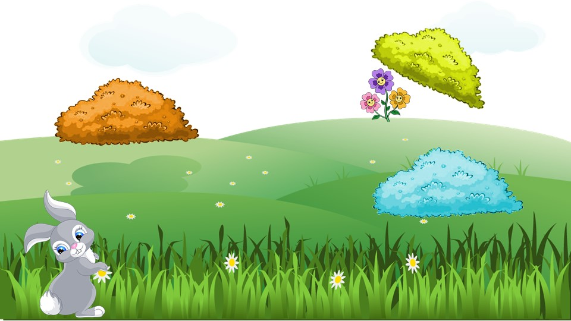
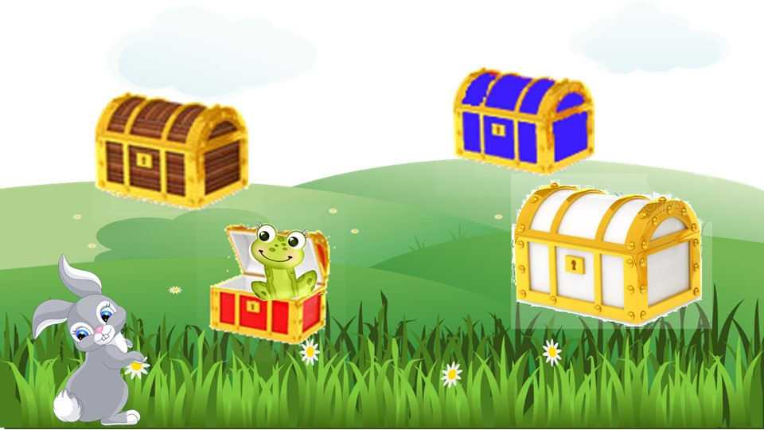

。Blog
<< 2020‧10‧27 |【Clinic】Funny Bunny Stories: /f/ in Isolation
I developed an activity and materials for children with speech sound disorders to work on /f/ in isolation. The treatment plan was developed in conjunction with my clinical partner, Keely Morrow, BA (Hons), MSc. Linguistics, who is a 2nd-year MSc. Speech-Language Pathology student at the University of Alberta.
The activity is about Funny Bunny looking for objects (e.g. flowers). It incorporates movement breaks, choices, and exposure to words with /f/.
The child will hop like a bunny for one time, and breathe like a bunny, i.e. make the /f/ sounds, for several times.


The child can choose to check under the bushes after a certain amount of productions. It can be adapted to looking into treasure boxes, or any other blocks. The clinician can keep the slides in edit mode and remove the blockers according to the child's choices. They can also add action links to the images and remove them on clicks.
 
Download: The first material was developed around a story of "Find the Flowers", and adapted to another story of "Find the Fireworks".
Should you have any questions regarding this activity, please feel free to contact me.